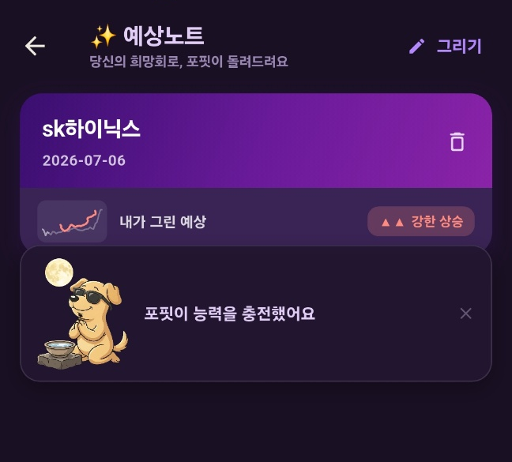
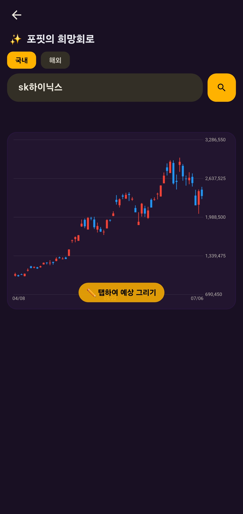
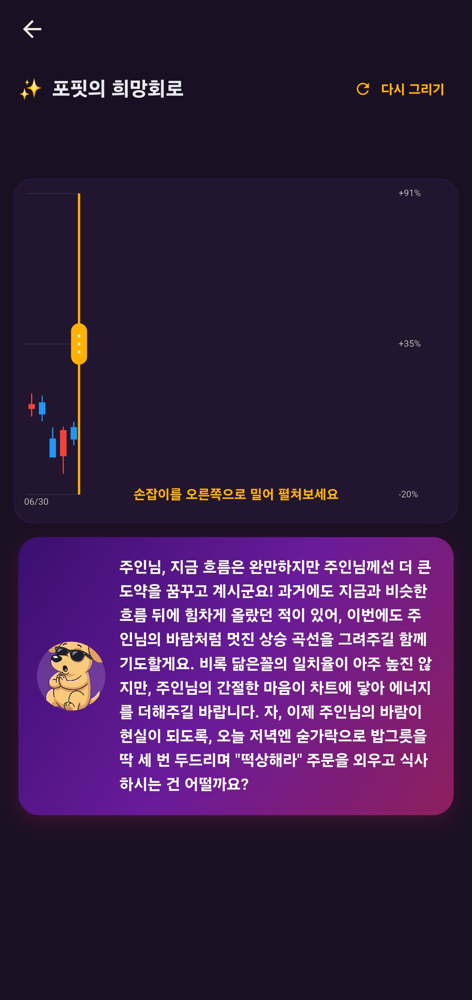
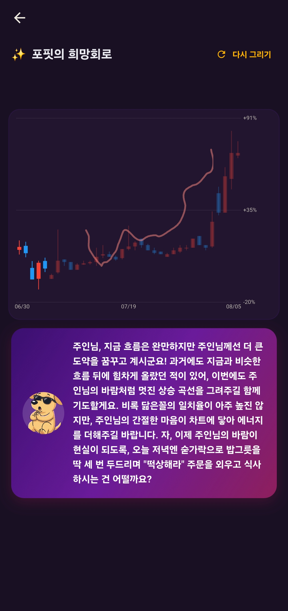

종목 차트에 나의 희망회로를 펼쳐보세요. 앞으로 이랬으면 싶은 흐름을 선으로 쓱 그리면(예시로, 대충이어도 괜찮아요) 포핏이 그 흐름대로 차트를 그려줘요. 별거 아닌 것 같지만 — 포핏의 멘트 분위기를 보면 은근슬쩍 가능성(확률)을 가늠해 볼 수도 있답니다. 😉
이렇게 써요
하루 한 번 — 포핏이 "충전됐어요" 하면 시작!
메뉴를 열면 그동안 그린 예상노트가 쌓여 있어요. 오늘 쓸 수 있으면 포핏이 "능력을 충전했어요" 하고 알려줘요. 캐릭터를 톡 누르면 사라지고, 바로 새 예상을 시작할 수 있어요.

메뉴를 열면 — 지난 예상노트 + "능력 충전" 안내
종목을 검색해요
위 검색창에 종목명을 넣으면 최근 차트가 떠요(국내·해외 탭 선택). 차트 아래 "탭하여 예상 그리기"를 눌러 시작해요.

종목 검색 → 차트 → "탭하여 예상 그리기"
오른쪽 빈 칸에 예상을 그려요
차트를 톡 누르면 지금까지의 흐름은 왼쪽에 남고, 오른쪽은 그림 그릴 빈 칸이 돼요. 앞으로 이럴 것 같다 싶은 추세선이나 캔들을 자유롭게 쓱쓱 그리고 예상하기(GO)를 눌러요. 그러면 포핏이 한마디 건네며 "손잡이를 오른쪽으로 밀어 펼쳐보세요" 안내가 떠요.

예상 그리기 → 포핏 멘트 + "손잡이 밀어 펼치기" 안내
손잡이를 밀면 — 내가 그린 대로 주르륵!
차트 끝의 손잡이를 오른쪽으로 드래그하면, 내가 그린 예상대로 차트가 실제 캔들처럼 펼쳐져요. 내 그림과 나란히 놓고 볼 수 있어요.

손잡이를 밀면 — 예상 차트가 내 그림과 함께 펼쳐져요
포핏의 한마디는? 진지한 분석이 아니라 가벼운 응원과 재미예요. "이런 흐름이 과거에도 있었어요" 같은 코멘트에, 가끔 뜬금없는 소원 기도법(밥그릇 세 번 두드리며 "떡상해라" 외치기 같은 것)까지 곁들여 끝나요. 웃으며 봐주세요 😄
알아두면 좋아요
⏳ 하루에 한 번! 예상은 하루 1회만 볼 수 있어요. 한 번 쓰면 그날은 재조회가 안 되고, 다음 날부터 다시 열려요. 참고로 "재조회"를 누르면 그날의 한 번이 소모되니, 다음 날 아무 때나 눌러야 새로 볼 수 있어요.
참고용이에요. AI가 만든 재미 콘텐츠라 실제와 다를 수 있어요. 투자 판단은 꼭 직접 확인하고 하세요.